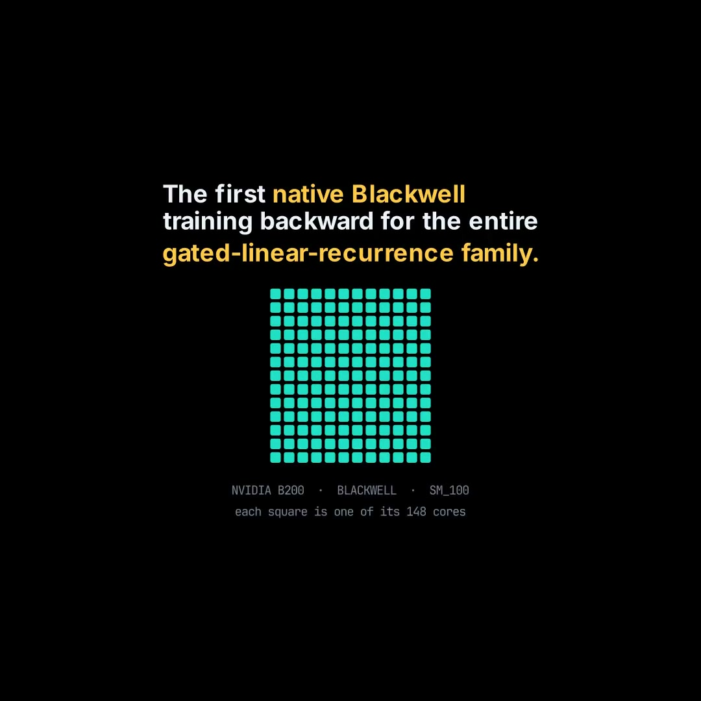
KernelBench's original correctness test passes 1,487 AI-written GPU kernels that Lethe's verifier flags as wrong. Also wrote the first native Blackwell (tcgen05) training backward for the linear-attention family.
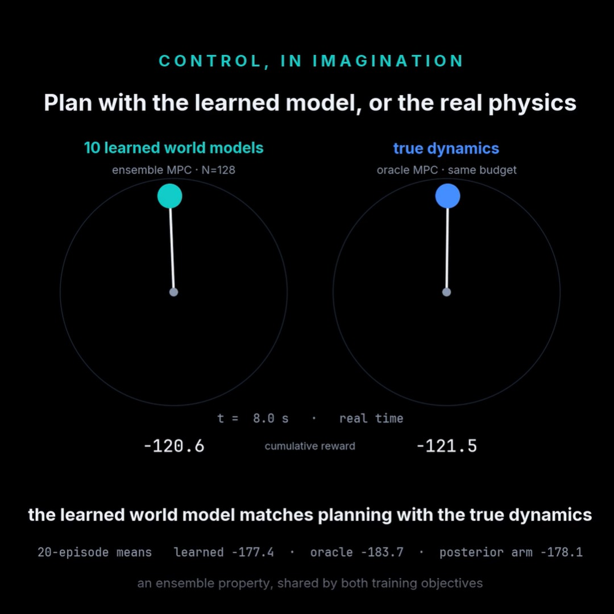
One loss term nearly doubles a world model's valid prediction time, with zero added parameters.
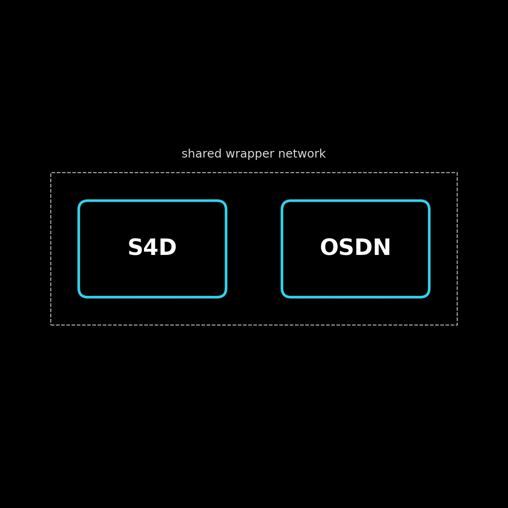
Predicts hypoglycemia 60 minutes ahead on a $4 chip, built from scratch in C++17.
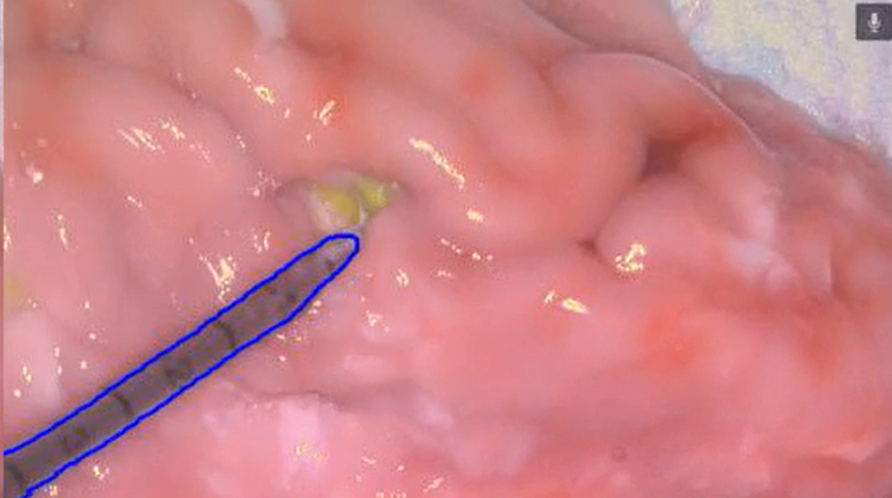
Surgical-vision AI built with Synaptive Medical that segments surgical tools at 95% accuracy.
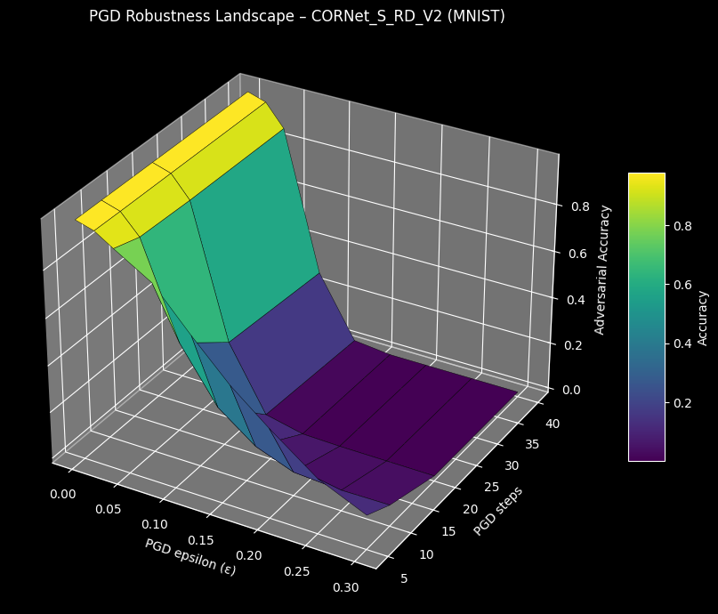
A bio-inspired vision model that beats MIT's CORNet-S on adversarial robustness, with no adversarial training.
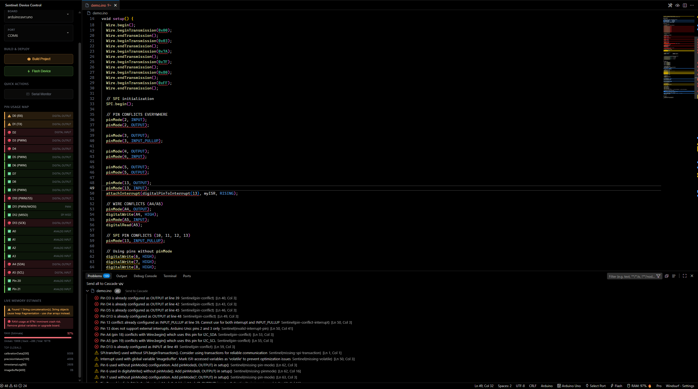
Catches Arduino and ESP32 hardware bugs as you type; 1.2K installs and Best Developer Tool at Hack Western 12.
Muscular dystrophy rehab on Meta Quest 2, with 26-joint hand tracking inside a World Labs Marble world.
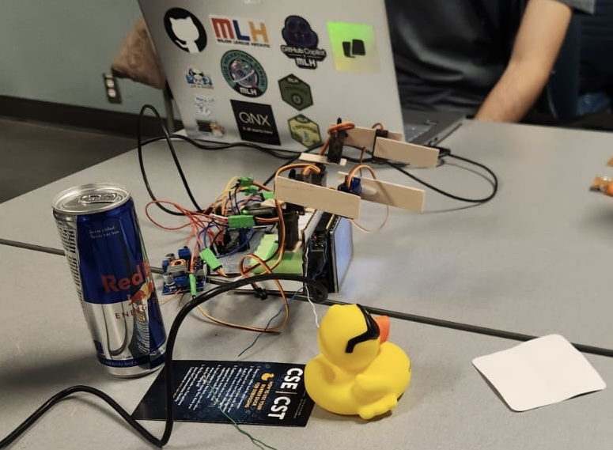
Robot arms that learn new skills from plain-English instructions, Top 32 of 256 at Hack the North.
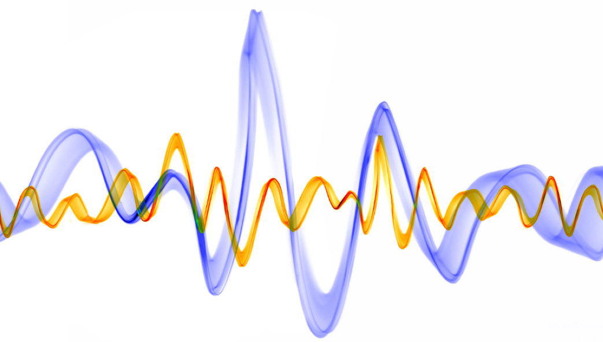
A hotkey voice assistant on Llama 3.1 that runs Spotify, calendar, weather and news.
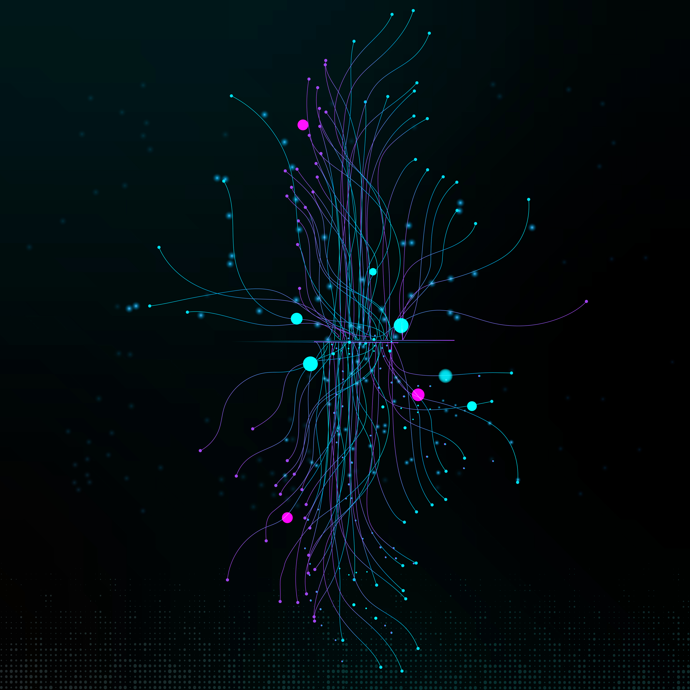
Triages skin conditions with a DenseNet121 trained on 19,000+ DermNet images.
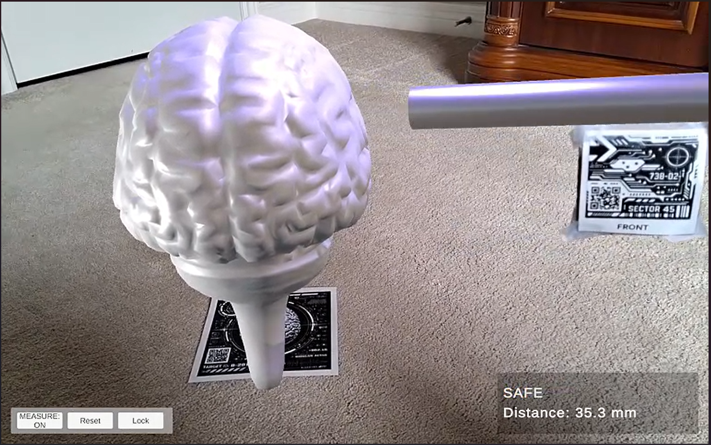
AR that tracks a surgical probe against a brain model and warns as it nears tissue.
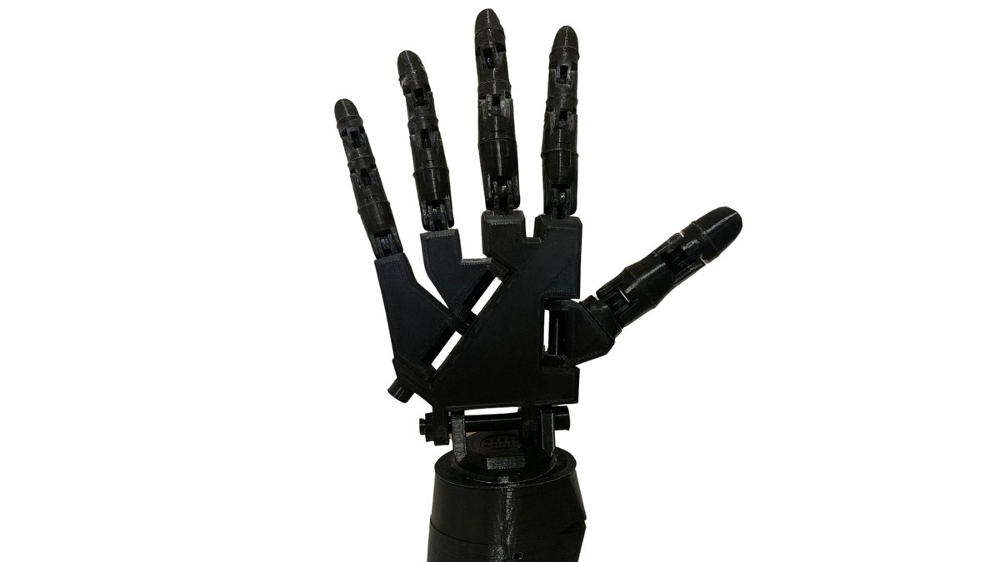
A 6-DOF robotic arm that mirrors hand gestures in real time.
Led the supervised layer and set the architecture direction of a longitudinal model that reads at-home fetal monitoring and returns a full posterior over days until delivery. The model predicts term delivery to within 3 days against 11 days for the clinical SOTA, and halves the obstetric calendar's preterm MAE.
Worked with Ford, MathWorks, and Dana on ML for battery optimization in their products. Cut battery voltage-model error 84% (12.82 mV to 2.03 mV RMSE) with a physics + LSTM hybrid, then carried it through ONNX to MATLAB and Simulink with machine-precision parity. Co-authoring a paper on agentic-AI-accelerated state-of-charge estimation built on a from-scratch EKF and SVSF.
Designed a biologically inspired recurrent vision model that reached 97.82% adversarial accuracy on MNIST without a single adversarial training example, outperforming MIT's CORNet-S by 12 points across MNIST, CIFAR-100, and ImageNet100.
Partnered with Synaptive Medical on surgical-vision AI: a U-Net at 95% DICE and sub-0.12 s per frame on live operating-room footage, plus a marker-based AR guidance prototype.